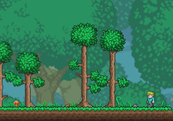
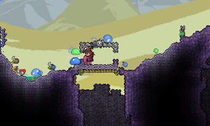
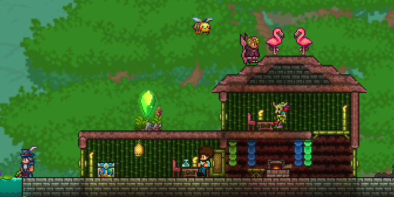

The game in short
Terraria is a 2D sandbox game. The world is built out of little tiles, which the player can break with different tools. The player is a little human that starts with some copper tools to fell trees and break stone. They work themselves up until they have a better pickaxe, strong weapons and a sturdy armor. The player then fights strong enemies and takes their materials to forge stronger equipment. Defeating some bosses also changes the environment, so that new ores generate or new enemies appear.

The world
The world is composed of many different environments, ranging from green planes to vile, hostile areas with monsters and thorns and down to the underworld, a place equivalent to hell. The undergorund is always the most exciting because the player finds the most stuff down there. There are a lot of chests and ores underground. The soundtrack fits really well to all of the environments.

The weapons and fights
The enemies and bosses are the most important thing in Terraria, directly corresponding with what weapons you have or could have. There are 4 classes. Mage, Meele, Ranged and Summoner. The best thing about them is that you can change you class easily by just changing your equipment. It's not like other games where you pick a class at the start and have to stick with it. You can even mix classes later into the game. The bossfights are always enemies way bigger than the player. A giant slime, a giant eye with a mouth, etc. There is only one boss that is the same size as the player, but he's still cool. The boss music is some of the best i've heard, directly comparable to AAA Games music.
All in all
Terraria is a great experience, alone and with friends. It's great for every tipe of player, even beginners, because there are a lot of difficulty options. The possibilities in this game are almost unlimited, considering you can build a lot of cool stuff.